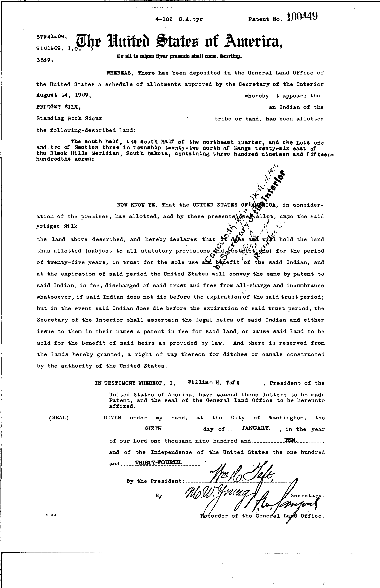
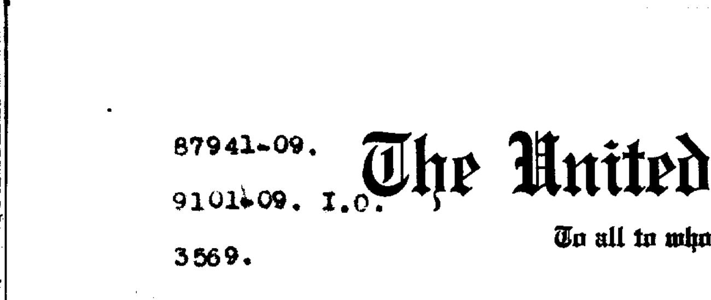
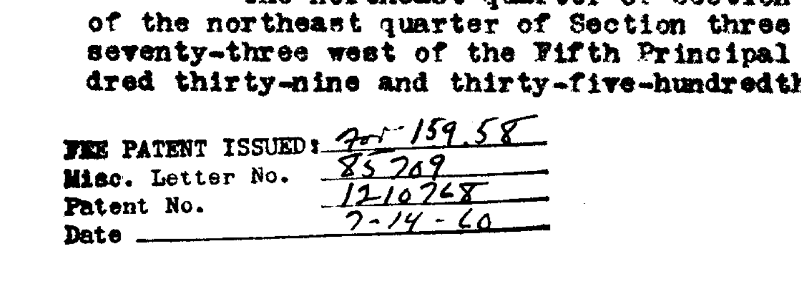

A real research workflow, in eleven slides — written for a friend who's wondering whether any of this could be useful in their own work.
Christian W. McMillen
University of Virginia · land-sales.iath.virginia.edu
I research how individual Indians lost their allotment lands across the twentieth century. The federal policy that drove the loss is known as the allotment era. It ran from the Dawes Act in 1887 to the Indian Reorganization Act in 1934, and it was designed to break apart shared tribal land bases by handing individual parcels to individual people who could then, and almost always did, lose them. The losses set in motion by that policy continued for decades after the policy itself ended, which is why my research extends across the whole century.
The federal government issued roughly 285,000 patents for those allotments. A patent is a deed: the document conveying the land. Every patent was first issued as a "trust patent," with the federal government holding legal title for 25 years; during that period the land could not be sold, mortgaged, or taxed. When the trust period ended, the trust patent was replaced by a "fee patent," which gave the allottee full legal title but also made the land taxable and salable. Most allotments were lost within a few years of fee conversion.
Everything I do in this project sits on top of a PostgreSQL database I have built up over several years. PostgreSQL is a standard open-source database system, the same kind a bank or a research library uses to keep structured records.
What I have loaded into it:
The basic structured data is in place. The AI work in the rest of this deck is about reading the information that was never captured in the structured records, only on the scanned patent images themselves.

100449 · Bridget Silk · Standing Rock Sioux · January 6, 1910 ·
original at BLM
One printed page with annotations typed or stamped on top. The data points the patent records:
All four data points are already in my database. The numbers typed in the upper left are not.

100449. Three stamped references:
87941-09, 91014-09 I.O., and 3569.
Every patent processed by the BIA after 1907 has a small block of numbers typed into the upper-left corner. The numbers take the form NNNNN-YY, and one of them is sometimes labeled "I.O." for Indian Office.
Each number points to a file in the BIA's Central Classified Files, the correspondence archive at the National Archives that ran from 1907 to 1975. Following one of these references leads to a folder of letters, memos, and administrative decisions about that specific allotment.
These reference numbers were never captured in the structured BLM records. They exist only on the PDF scan.

5515 · Good House Woman ·
Crow Creek Sioux · trust patent 1908, fee patent 1960.
Many fee patents are separate records in my database, with their own patent number, date, and allottee record.
For other conversions, though, the BIA simply stamped the original trust patent with the new fee number and date. The stamp shown here records that Good House Woman's 1908 trust patent was converted to a fee patent on February 14, 1960. A fifty-two-year arc, recorded in five handwritten lines on the original document.
For trust patents like this one, the stamp is the only record of the conversion. It is not in my database. The vision model's job is to find and read these stamps.
For some patents BLM did capture the file reference in a structured column. For tens of thousands of others, they didn't — and the only way to recover the information is to read the PDF.
Not happening. Not for one human, not for a research team. And honestly, even if I had the time, I don't want to spend the next four months reading PDF forms.
Modern AI models can be shown an image and asked questions about it — the way you'd brief a research assistant. I give the model the scanned PDF and a written prompt:
"Look at the top-left of this form. What reference numbers do you see? Now look at the middle of the page. Is there a stamp that says Fee Patent Issued? If yes, what number and date does it record?"
The model returns structured data — something like:
{
"ccf_reference": "87941-09",
"ccf_label": "I.O.",
"fee_patent_issued": true,
"fee_patent_number": "1210268",
"fee_patent_date": "1960-02-14"
}
About a penny per patent. Two seconds. Same task takes me thirty seconds and a steady supply of attention.
The AI model itself is general-purpose. Anthropic trained it on billions of images and texts long before I existed as a user. That training was not done for me, and it was not done with Indian Allotment patents in mind.
General training does not make the model automatically reliable for a specific task like reading a 1909 patent's upper-left CCF stamp. The reliability has to be worked out, and I am the one who works it out.
I am not retraining the model itself. I cannot do that, and I do not need to. What I am doing is iteratively refining the prompt, meaning the written instructions I send along with the PDF on every API call.
Each version of the prompt was tested on a 25-PDF sample whose correct answers I had already worked out by hand. Then I compared what the model said to what I knew was right and looked for the failures. Then I rewrote the prompt.
| Round | Change | Accuracy |
|---|---|---|
v1 | First pass. One prompt, one field. | ~70% |
v2 | Described the form layout explicitly. | ~85% |
v3 | Required an "unreadable" answer when a field was illegible, instead of letting the model guess. | ~92% |
v4 | Split the top-left read and the middle-page read into separate API calls. One specialty per call. | >97% |
The skill is not the model. The skill is knowing how to ask.
The PDFs do not live on my laptop. Neither does the AI. The PDFs sit on BLM's catalog server. The AI sits on Anthropic's servers. My code on my laptop talks to each of them over the internet.
The mechanism for that conversation is called an API, short for Application Programming Interface. It is just a contract for how one program asks another for something. The same idea sits behind your phone's weather app talking to a weather service, or a credit card terminal talking to your bank.
This project uses two different APIs in sequence, one from BLM and one from Anthropic. They do opposite things.
In step one, my downloader script sends a short message to BLM that
says, in effect, "give me patent 100449." BLM looks up
the record, generates the patent image on the fly, and sends back
the PDF, about 150 KB.
In step two, my extractor script ships that PDF over to Anthropic along with the written instructions from the previous slide. The AI reads the image and sends back the extracted fields in the labeled-list format we saw, only a few hundred bytes of text. That answer goes straight into my database.
Before this work, Lizzie Dowd's allotment lived in my database as three disconnected records:
| Accession | Year | Name as recorded | Authority |
|---|---|---|---|
IA-0505-452 | 1891 | Lizzie Dowd | Indian Allotment — General (trust) |
IA-0505-453 | 1891 | Lizzie Dowd | Indian Allotment — General (trust) |
MV-0580-454 | 1906 | Lizzie D. Gilman; Lizzie Dowd | Indian Fee Patent |
Same parcel, same Section 31 in Yamhill County, Oregon. Two trust patents issued in 1891 and a fee patent issued fifteen years later. The surname change tells most of the story: Lizzie Dowd married someone named Gilman between the trust and fee dates. The fee patent was the moment her land became taxable, salable, and, by the statistics, very likely to be lost.
After this work, those three rows are linked together into one allotment with a fifteen-year arc. Multiply that linkage by tens of thousands, and the whole catalog stops being a pile of records and becomes a readable history.
I am still a historian. The interesting work is still the work of framing the question, knowing the archive, reading documents carefully, and arguing about what they mean.
The biggest difference is that I no longer have to choose what to read on the basis of how much time the reading itself will take.
The whole project, including code and data: github.com/cwmmwc/american-indian-allotment